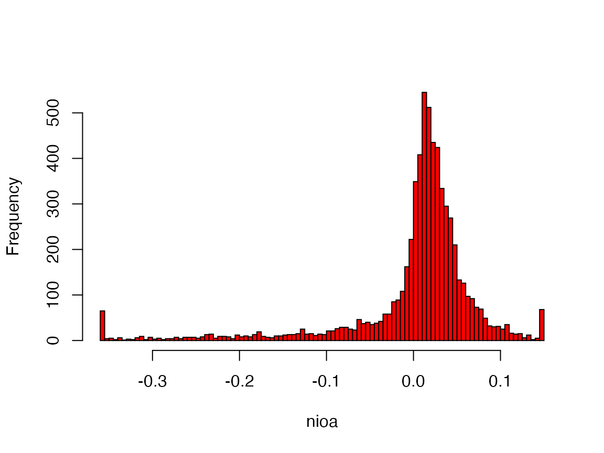
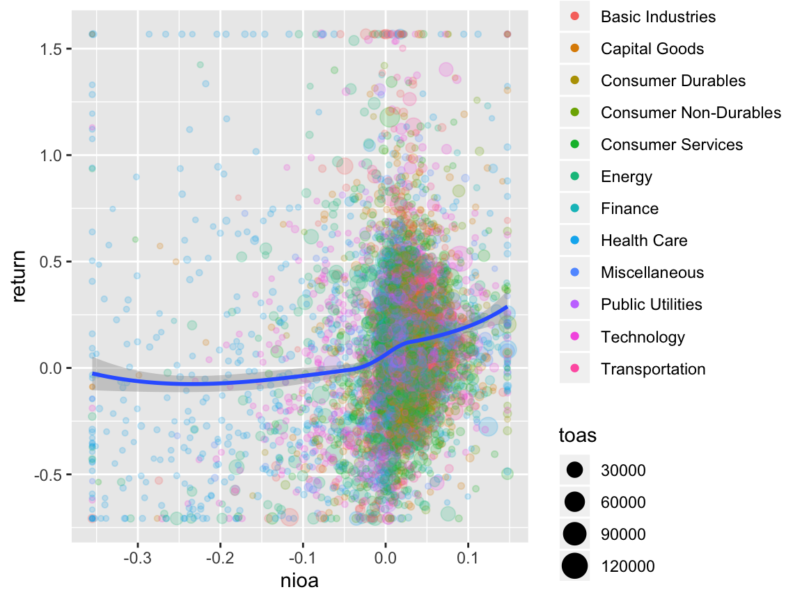
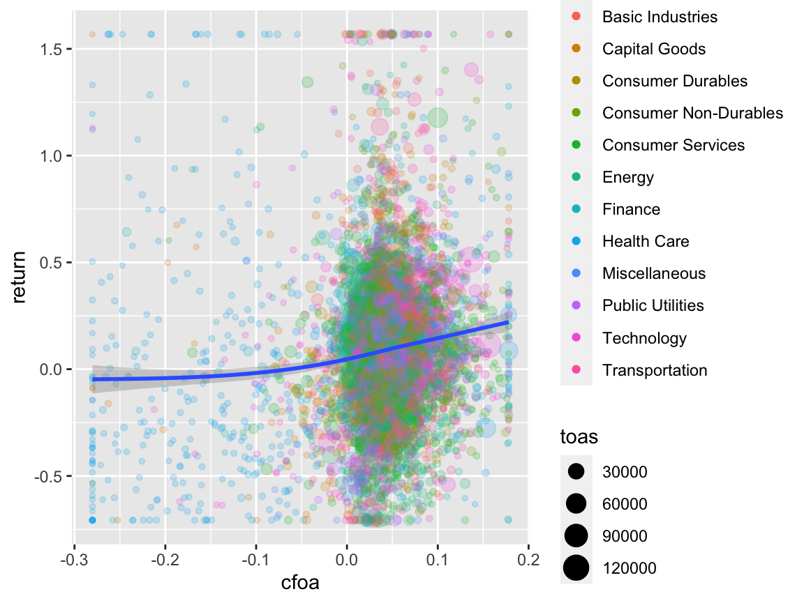

Using the ExPanD Notebook function
Joachim Gassen
2020-12-06
ExPanD_notebook.RmdExporting a Notebook from within ExPanD
When you start ExPanD with the parameter export_nb_option = TRUE, you can export an R notebook containing the current state of your analysis from within the ExPanD app. Let’s see how that works and what the notebook has to offer. First, start ExPanD with the included panel data on U.S. corporations and the option to export notebooks.
library(ExPanDaR)
ExPanD(df = russell_3000,
df_def = russell_3000_data_def,
df_name = "Russell 3000",
config_list = ExPanD_config_russell_3000,
export_nb_option = TRUE)Next, after scrolling to the bottom of the page and clicking on the button below,

you should be rewarded with a file download dialog, asking you to store a file named ExPanD_nb.zip. Store and unzip it wherever you like. It contains two files
- A notebook file
ExPanD_nb_code.Rmdand - a data file
ExPanD_nb_data.RDatacontaining data and variable definitions.
Exploring the Notebook Code
Use RStudio to open the notebook file. You can directly knit it (Preview/Knit to HTML) but in order to work with and extend it, it is useful to take a deeper look at its code first. The first chunk silently loads required libraries and sets some knitting defaults. The second chunk is more interesting:
create_sample <- function(df, df_def) {
# Set infinite numerical variables to NA
df[, df_def$var_name[df_def$type == "numeric"]] <-
lapply(df[, df_def$var_name[df_def$type == "numeric"]],
function(x) ifelse(is.finite(x), x, NA))
# Delete numerical variables that only contain NAs
all_na_vars <- sapply(df, function (x) all(is.na(x)))
df_def <- df_def[!all_na_vars,]
df <- df[, df_def$var_name]
# Drop observations that are NA in variables that are not allowed to
df <- df[complete.cases(df[, df_def$var_name[which(df_def$can_be_na == FALSE)]]), ]
# Outlier treatment as requested in ExPanD()
nums <- df_def$var_name[df_def$type == "numeric"]
df[, nums] <- treat_outliers(df[, nums], 0.01, FALSE, NULL)
df <- droplevels(df)
return(list(df = df, df_def = df_def))
}
load("ExPanD_nb_data.Rdata")
smp_list <- create_sample(nb_df, nb_df_def)
smp <- smp_list$df
smp_def <- smp_list$df_defIf you are not that familiar yet with R, the above might look a little bit intimidating. Let’s explore it step by step. The first large part of the code, starting with create_sample and ending several lines later with the closing curly bracket on a separate line defines a function. A function is a block of code that can take parameters and returns an object. The function is named create_sample and that is what it does: It creates the sample that is being used in the analysis further below. You see that the function is being called after loading the data with the command create_sample(nb_df, nb_df_def). Let’s look at the data that is passed on to the function before exploring what the function does in detail. After loading "ExPanD_nb_data.Rdata", you have the data frames nb_df and nb_df_def in your environment. The first contains the raw data for the analysis in long format. See:
| coid | period | coname | sector | industry | toas | sales |
|---|---|---|---|---|---|---|
| A | FY2013 | Agilent Technologies, Inc. | Capital Goods | Biotechnology: Laboratory Analytical Instruments | 10686 | 3894 |
| A | FY2014 | Agilent Technologies, Inc. | Capital Goods | Biotechnology: Laboratory Analytical Instruments | 10815 | 4048 |
| A | FY2015 | Agilent Technologies, Inc. | Capital Goods | Biotechnology: Laboratory Analytical Instruments | 7479 | 4038 |
| A | FY2016 | Agilent Technologies, Inc. | Capital Goods | Biotechnology: Laboratory Analytical Instruments | 7794 | 4202 |
| AA | FY2014 | Alcoa Corporation | Capital Goods | Metal Fabrications | 18680 | 13147 |
| AA | FY2015 | Alcoa Corporation | Capital Goods | Metal Fabrications | 16413 | 11199 |
What is the second data frame for? Let’s have a peak:
| var_name | var_def | type | can_be_na |
|---|---|---|---|
| coid | Company identifier | cs_id | FALSE |
| period | Fiscal year | ts_id | FALSE |
| coname | Company name | cs_id | FALSE |
| sector | Sector | factor | TRUE |
| industry | Industry | factor | TRUE |
| toas | Total assets at period end (M US-$) | numeric | TRUE |
| sales | Sales of the period (M US-$) | numeric | TRUE |
| equity | Total equity at period end (M US-$) | numeric | TRUE |
| debt_ta | Total debt (% total assets) | numeric | TRUE |
| eq_ta | Total equity (% total assets) | numeric | TRUE |
| gw_ta | Goodwill (% total assets) | numeric | TRUE |
| oint_ta | Other intangible assets (% total assets) | numeric | TRUE |
| ppe_ta | Property, plant and equipment (% total assets) | numeric | TRUE |
| ca_ta | Current assets (% total assets) | numeric | TRUE |
| cash_ta | Cash (% total assets) | numeric | TRUE |
| roe | Return on equity (net income divided by average equity) | numeric | TRUE |
| roa | Return on assets (earnings before interest and taxes divided by average equity) | numeric | TRUE |
| nioa | Net income divided by average assets | numeric | TRUE |
| cfoa | Cash flow from operations divided by average assets | numeric | TRUE |
| accoa | Total accruals divided by average assets | numeric | TRUE |
| cogs_sales | Cost of goods sold divided by sales | numeric | TRUE |
| ebit_sales | Earnings before interest and taxes divided by sales | numeric | TRUE |
| ni_sales | Net income divided by sales | numeric | TRUE |
| return | Stock return of the period (%) | numeric | TRUE |
So this data frame contains variable definitions and defines how ExPanD should treat the variables. type indicates the cross-sectional (cs_id) and time series (ts_id) identifiers as well as whether the variables should be understood as numeric, logical or as a factor. can_be_na indicates whether ExPanD should require the variable to be not NA. If can_be_na is set to FALSE for a variable and its data is missing for a certain observation then ExPanD drops the whole observation (the row of the data frame) from the analysis.
The function create_sample now uses both data frames to prepare the sample for the analysis. It first sets all non finite numerical values to NA. Next, it checks whether any variables contain only NA observations and, if such variables are present in the data frame, it deletes them. After that, observations with NA values for variables that have set can_be_na = FALSE are deleted. Last, the outlier treatment as specified in the ExPanD app is applied to the data by calling the ExPanDaR function treat_outliers(). The default configuration that you used when calling ExPanD specified that the data should be winsorized at the top and bottom 1% percentile, meaning that values above the top 1% or below the bottom 1% will be set to the respective percentiles.
After these data preparation steps the modified data frames containing the data and its definitions are returned to the user, wrapped into a list object. The last two commands store these data frames into smp and smp_def. The remaining code will use these data frames for the analysis.
The rest of the notebook is much easier to process. For example, the chunk
df <- smp
df$period <- as.factor(df$period)
df$sector <- as.factor(df$sector)
p <- ggplot(df, aes(x = period)) +
geom_bar(aes(fill= sector), position = "stack") +
labs(x = "period", fill = "sector")
p
provides a stacked bar chart of the ExPanD app.1
When you look at the histogram for a given variable (as produced by the sixth chunk)
var <- as.numeric(smp$nioa)
hist(var, main="", xlab = "nioa", col="red", right = FALSE, breaks= 150)
you directly see the effect of winsorization on the data (Net Income divided by average total assets in this case).
Most of the chunks make use of the wrapper functions provided by the ExPanDaR package. For one, the fifth chunk uses prepare_descriptive_table() to quickly produce a standard descriptive statistics table.
df <- smp
t <- prepare_descriptive_table(smp)
t$kable_ret %>%
kable_styling("condensed", full_width = F, position = "center")| N | Mean | Std. dev. | Min. | 25 % | Median | 75 % | Max. | |
|---|---|---|---|---|---|---|---|---|
| toas | 8,770 | 7,120.241 | 17,672.452 | 32.797 | 436.235 | 1,532.440 | 4,943.997 | 123,268.709 |
| sales | 8,777 | 4,307.316 | 10,942.386 | 0.638 | 281.050 | 926.670 | 3,094.020 | 79,966.280 |
| equity | 8,770 | 2,294.681 | 5,610.286 | -705.284 | 179.058 | 554.135 | 1,666.255 | 39,737.850 |
| debt_ta | 8,770 | 0.277 | 0.235 | 0.000 | 0.064 | 0.253 | 0.424 | 0.991 |
| eq_ta | 8,770 | 0.437 | 0.266 | -0.466 | 0.277 | 0.446 | 0.621 | 0.930 |
| gw_ta | 6,382 | 0.174 | 0.153 | 0.000 | 0.047 | 0.132 | 0.268 | 0.610 |
| oint_ta | 6,754 | 0.096 | 0.111 | 0.000 | 0.018 | 0.057 | 0.136 | 0.576 |
| ppe_ta | 8,003 | 0.270 | 0.273 | 0.001 | 0.060 | 0.157 | 0.402 | 0.938 |
| ca_ta | 7,670 | 0.449 | 0.248 | 0.040 | 0.240 | 0.435 | 0.632 | 0.978 |
| cash_ta | 8,303 | 0.136 | 0.164 | 0.000 | 0.026 | 0.079 | 0.181 | 0.863 |
| roe | 6,398 | 0.017 | 0.262 | -1.388 | -0.008 | 0.043 | 0.086 | 1.145 |
| roa | 6,399 | 0.012 | 0.086 | -0.366 | -0.001 | 0.023 | 0.051 | 0.201 |
| nioa | 6,399 | 0.002 | 0.077 | -0.355 | -0.002 | 0.017 | 0.037 | 0.147 |
| cfoa | 6,399 | 0.034 | 0.068 | -0.280 | 0.021 | 0.041 | 0.065 | 0.178 |
| accoa | 6,399 | -0.032 | 0.043 | -0.209 | -0.046 | -0.026 | -0.012 | 0.092 |
| cogs_sales | 8,109 | 0.538 | 0.240 | 0.020 | 0.355 | 0.569 | 0.729 | 0.982 |
| ebit_sales | 8,777 | -0.952 | 6.570 | -56.918 | -0.002 | 0.068 | 0.148 | 0.615 |
| ni_sales | 8,777 | -0.947 | 6.381 | -55.198 | -0.005 | 0.048 | 0.110 | 0.573 |
| return | 6,009 | 0.088 | 0.375 | -0.707 | -0.136 | 0.065 | 0.269 | 1.568 |
See the help pages of these functions and the vignette “Using the functions of the ExPanDaR package” for more information on how to use them. Also, you can always take a look at their code (just call their name without the brackets) to see what they do under the hood and to extend or modify them.
Modifying and Extending the Notebook
Now that you understood how the notebook is set up, it is relatively easy to modify the notebook and extend your analysis without using ExPanD. For example: The chunk below from the notebook prepares a scatter plot of return relative to net income.
df <- smp
df <- df[, c("coid", "coname", "period", "nioa", "return", "sector", "toas")]
df <- df[complete.cases(df), ]
df$sector <- as.factor(df$sector)
prepare_scatter_plot(df, "nioa", "return", color = "sector", size = "toas", loess = 1)## `geom_smooth()` using method = 'gam' and formula 'y ~ s(x, bs = "cs")'
Let’s assume that in addition you want to see how cash flows from operations relate to stock returns. Easy! Just replace "nioa", the name of the net income variable with "cfoa", the name of the cash flow from operations variable.
df <- smp
df <- df[, c("coid", "coname", "period", "cfoa", "return", "sector", "toas")]
df <- df[complete.cases(df), ]
df$sector <- as.factor(df$sector)
prepare_scatter_plot(df, "cfoa", "return", color = "sector", size = "toas", loess = 1)## `geom_smooth()` using method = 'gam' and formula 'y ~ s(x, bs = "cs")'
Looks very similar, right? Now you are all set. Feel free to modify and extend your analysis along all possible dimensions. Code away and enjoy!
A remark for the R experts: Some of the code of the analysis chunks (e.g. the
as.factor()calls in the chunk above) is only needed because of the generic data types that ExPanD can handle and could be safely removed for a specific well-behaved data frame.↩